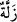

11. İşte orada îman sahipleri imtihandan geçirilmiş ve şiddetli bir sarsıntıya
uğratılmışlardı.
“İşte orada îman sahipleri” kuşatma ve korkuyla “imtihandan geçirilmiş” imtihan
edilen kimseye yapılan muâmeleye tâbi tutulmuş, böylece ihlâslı olan münâfık olandan,
yerinde sâbit olan sarsıntıya uğrayandan ayrılıp ortaya çıkmış “ve şiddetli bir
sarsıntıya uğratılmışlardı.”
“
(orada)” kelimesi aslında uzak mekâna işâret içindir. Fakat Araplar mekânı
zamandan, zamanı da mekândan kinâye olarak kullanırlar. Bu kelime, kendisinden
sonrası için zaman veya mekân zarfıdır. Yâni o şiddetli zamanda yahut o ayakların
kaydığı kaygan yerde demektir.
“
” aslında kişinin kasıtsız kayıp düşmesidir. “
” kaygan yer demektir. Kasıtsız
işlenen günaha da, ayağın kaymasına benzetilerek “ (zelle)” denilmiştir. “
”
sarsıntı demektir. “
” şiddetli hareket mânâsınadır. Kelimenin lâfzının harflerinin
tekrar edilmesi, sarsıntı mânâsının tekrar ettiğine dikkat çekmek içindir. Mânâ şöyledir:
Onlar şiddetle hareket ettirilip sarsıldılar ve kuvvetli bir sıkıntıya uğratıldılar. Çünkü
korkan insan endişeli ve huzursuz olur, bu yüzden de yerinde duramaz.
Keşfü’l-esrâr’da der ki: “Böyle bir durumda Acem şöyle der: “Falan kişiyi öfke,
korku veya utançtan dolayı bir yerden götürdüler.” Kâşifî ise şöyle der: “Bir yerden
gittiler. Kötü kalpliler “Kaçacak yer neresi?!” (el-Kıyâme, 75/10) seferi için yola
çıktılar. Sabırsız âşıklar ise “Özgür olunmayan yerden kaçmak peygamberlerin
sünnetidir” yazısını okuyup tekrar ediyorlardı.”
Gönülden huzûra kavuştu, gönül de mekândan yana
Akıl baştan gitti, ayaktan da kuvvet gitti.
Kalbinde hastalık olanların Medine’ye kaçtıkları ve mü’minlerden yakîn/şüphesiz
îman ehli olanların Rasûlullah (s.a.) ile beraber kaldığı sâbittir.
Bu âyet, hendek savaşının başında bir karışıklık olduğunu, fakat Allâh’ın sonunda
onlara sıkıntıları kolaylaştırdığını beyan etmektedir. Böylece onların kalplerinden gam
ve kederler dağılmış ve sekînet pınarları açılmıştır. İşte Allâh’ın ihlâslı kullara
uyguladığı usul budur.
Hz. Mustafâ (a.s.) şöyle buyurmuştur: “Yüksek cennetlerde bir çok dereceler ve
makamlar vardır ki kul kendiliğinden oralara ulaşamaz. Cenâb-ı Hak kulunu
dünyâda bazı belâlara mübtelâ eder ve bu sebeple cennetteki o derecelere ulaştırır.”
Demişlerdir ki: Hak Teâlâ Âdem (a.s.)’ın neslini bin kısma ayırdı. Onları muhabbet
kilimi üzerinde yayıp gösterdi. Hepsi sevgi ile ayağa kalktı. Sonra dünyâyı süsledi ve
onlara sundu. İnsanlar dünyânın süslerini ve güzelliklerini görünce sarhoş ve dünyâya
tutkun oldular. Dünyânın yanında kaldılar, onu tercih ettiler. Sadece bir grup müstesnâ.
Onlar aynı şekilde muhabbet (Allah sevgisi) kilimi üzerinde durmaya devam ettiler.